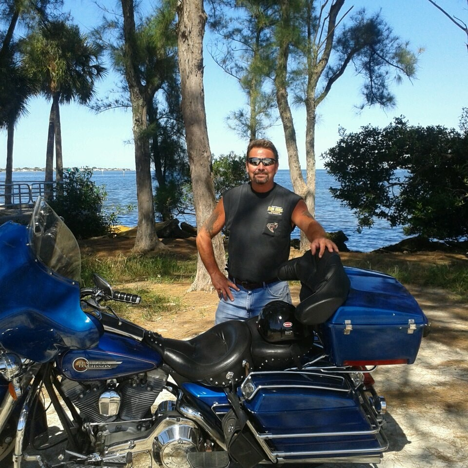

Mark has been in the plaster and stucco industry for over three decades. You can count on Mark and his team to arrive on-time, complete your project as agreed, and treat your property with respect.
At Mark Pestana Plaster and Stucco, we work on projects of all sizes and complexities, from simple repair work to extensive ornamental plaster, and more. Mark can make traditional plaster designs and create custom molds to make any design you like.
Service area: primarily Florida State including Homosassa, Crystal River, and the Tampa Bay Area.
Mark has completed projects throughout the United States and Europe, in family homes, historic buildings, and even casinos.
Contact Mark today to discuss your plaster or stucco project and schedule an on-site estimate.
